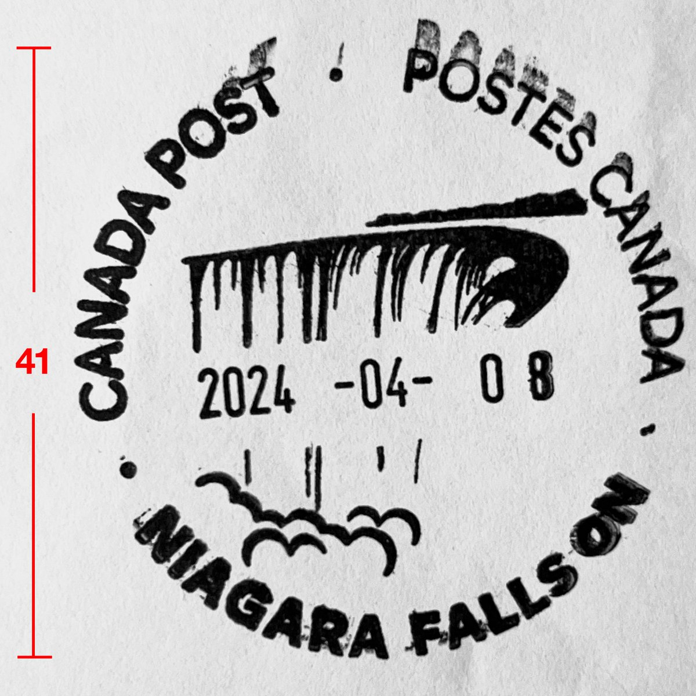

Niagara Falls PO pictorial cancel
Niagara Falls
- Status
- Active
- Run dates
- 2024-01-01 to 2035-12-31
- Design
- Niagara Falls
- Ink colour
- Black
- Designer
- Unknown
- Post office
- Niagara Falls PO
4500 Queen St
Niagara Falls, ON
L2E 0A0 - Subjects
- waterfall, river
Collect it by mail. Send your stamped covers, with a stamped return envelope, to the post office address above. How to collect pictorial cancels by mail · en français
 Ridgeway POLighthouse
Ridgeway POLighthouse Ridgeway POBattle
Ridgeway POBattle Winona POHome of the Peach Festival
Winona POHome of the Peach Festival